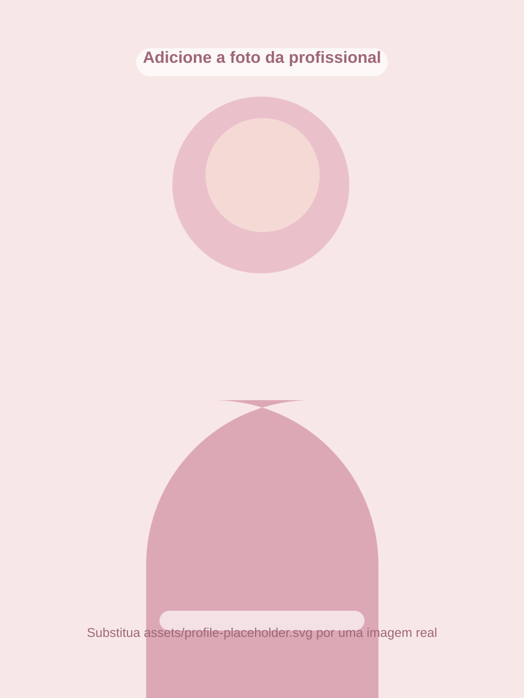

Treinos personalizados
Estrutura pensada para o seu objetivo, nível e rotina.
Treino, rotina e acompanhamento com leveza
Nutricionista e Personal Trainer
Ajudo você a criar constância com treino, organização da rotina e acompanhamento de treino + dieta de forma prática e acessível.

Sobre
Minha proposta é te ajudar a sair da desorganização e construir uma rotina mais consistente, com treino, alimentação e acompanhamento adaptados à sua realidade.
Aqui, o foco não é perfeição. É constância, leveza, clareza e evolução. Com um plano simples e acompanhamento próximo, você consegue manter o processo de forma sustentável.
Serviços
Estrutura pensada para o seu objetivo, nível e rotina.
Organização de treino e alimentação de forma mais prática.
Mais clareza para manter constância no seu processo.
Contato fácil para dúvidas, orientação e acompanhamento.
Organizador de links
Escolha uma aba para visualizar os links disponíveis.
Depoimentos
“Consegui voltar a treinar com organização e sem me sentir perdida. Ficou tudo muito mais leve.”
Mariana, 27 anos“A divisão entre treino e rotina ficou clara. O suporte no WhatsApp fez muita diferença.”
Camila, 31 anos“Gostei porque não foi algo impossível de seguir. Foi um plano realista para o meu dia a dia.”
Rafaela, 24 anosFAQ
Você recebe a organização do material conforme o plano escolhido e pode tirar dúvidas pelo WhatsApp.
Sim. Há uma aba exclusiva de treino e outra com treino + dieta, para atender diferentes necessidades.
Sim. A proposta da página foi pensada para atendimento online, acesso fácil aos materiais e suporte rápido.
Basta clicar nos botões de WhatsApp da página para iniciar a conversa com mensagem automática.